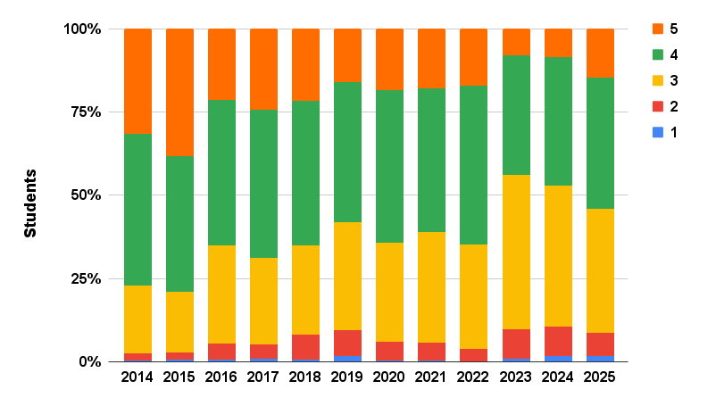
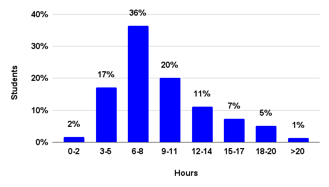

常见问题
电子邮件 heads@cs50.harvard.edu with any other 问题!
- Auditing
- College Requirements
- Comfort
- Curriculum
- Grades
- HarvardKey
- 讲座
- Prior Experience
- 问题集
- 小组课
- Workload
Auditing
Can I audit CS50?
Yes, if by audit you mean attend or 观看 the 课程 讲座 and/or complete the 课程’s 问题集.
If, though, you would like to attend 小组课 and 答疑时间, and/or 提交 问题集 for feedback, you should register or cross-register instead.
College Requirements
Does CS50 satisfy any College requirements?
Yes. You 五月 take CS50 to fulfill Science and Engineering and Applied Science distribution requirement or the Quantitative Reasoning with Data (QRD) requirement, but not both.
- To satisfy Science and Engineering and Applied Science distribution requirement, you 五月 take CS50 SAT/UNSAT or for LG.
- To satisfy the Quantitative Reasoning with Data (QRD) requirement, you 五月 take CS50 for LG only.
Comfort
Will everyone else know 更多 than me? 较少 than me?
Not at all! Approximately 40% of CS50 students have never taken a CS 课程 before. Moreover, in 秋季 2025, 48% of students described themselves as among those 较少 or least comfortable, while 23% described themselves as 更多 comfortable, and 29% described themselves as somewhere in between. No matter your own comfort level, then, you’ll be in good company!

Curriculum
Which languages will I learn?
Rather than teach just one language, CS50 introduces students to a range of “procedural” 编程 languages, each of which builds conceptually atop another, among them Scratch, C, Python, SQL, and JavaScript. Along the way does the 课程 also introduce students to HTML and CSS (which are languages but not 编程 languages). The goal, ultimately, is for students to feel not that they “learned how to program in X” but that they “learned how to program.”
Why does CS50 use C?
See this 答案 on Quora!
Grades
Can I take CSCI S-50 SAT/UNS?
The only grading basis available for students enrolled in CSCI S-50 at 哈佛继续教育学院 is letter grade.
HarvardKey
How do I claim my HarvardKey?
After completing your registration, in your student portal you should be able to find your eight-digit HUID. Scroll down to “Harvard ID Number and HarvardKey” at that link and then you can follow the instructions there to claim your HarvardKey, which is needed to access some of the 课程’s 资源.
讲座
When are 讲座?
讲座 are ordinarily on Mondays and Thursdays, posted at noon ET.
Prior Experience
Can I resubmit code I already wrote if I took CS50 AP or CS50x?
If you took part or all of CS50 AP (online or in high school) or CS50x (online), you can resubmit code from 问题集 that you already completed so long as you completed them in a “reasonable” manner, per the 课程’s policy on 学术诚信. If you completed them in an “unreasonable” manner, as by viewing someone else’s solutions at the 时间, you should not review or resubmit your prior work; you should instead re-do those 问题集 from scratch.
If you do resubmit code that you already wrote, be sure it adheres to the current semester’s specifications, which might differ from earlier versions. And be sure to mention via a comment in your code that you previously submitted it.
Does CS50 have any prerequisites?
No, CS50 is indeed designed for concentrators and non-concentrators alike, with or without prior 编程 experience. And two thirds of CS50 students have indeed never taken CS before. Even so, while it is not necessary (or expected!) that you prepare (e.g., over the 夏季) to take CS50, some students find it helpful to do so! If anything, a bit of prep over the 夏季 might help you feel all the 更多 comfortable in the 课程’s first 周次, especially if you’re a first-year, in which case both CS and college might be new to you!
If, then, you would like to prepare over the 夏季, we recommend that you take (for free!) CS50’s Introduction to 编程 with Scratch on edX. (No need to pay for a 证书!) We use Scratch, a graphical 编程 language from MIT’s Media Lab, in CS50’s own first 周 in the 秋季, so spending a bit of 时间 with Scratch over the 夏季 will allow you to hit the ground running. Even though Scratch is designed for younger students, here’s why we use Scratch (for just one 周!) at Harvard and Yale alike!
Should I skip CS50 if I already took AP CS A?
Probably not. Most students who have taken AP CS A still take CS50 as it tends to fill in gaps in their knowledge and also introduces them to C (and 更多!). If you can’t complete the test from 上一页 years quickly and correctly, you shouldn’t skip CS50.
Should I skip CS50 if I already took AP CSP?
Probably not, unless you took CS50 AP. If you can’t complete the test from 2022–2023 academic year quickly and correctly, you shouldn’t skip CS50.
问题集
What’s the difference between “较少 comfortable” and “更多 comfortable” problems? Do I have to do both?
In some earlier 问题集, you’ll have a choice between a “较少 comfortable” and a “更多 comfortable” problem.
The “较少 comfortable” are what you might consider the “standard” version of the problem, designed for students who have little or no prior experience. The “更多 comfortable” are the “challenge” version, designed for students who consider themselves 更多 comfortable due to prior study/experience before this class. As such, they 五月 require 更多 concepts than have been covered in the 课程 so far.
You don’t get any extra points for doing the “更多 comfortable” problems. If you 提交 both, we will consider the one with the highest score. For reference, in 秋季 2025, 10–35% of students submitted the “更多 comfortable” problems.
小组课
Is attendance at 小组课 expected?
Yes, as 小组课 are meant to be a 更多 intimate, interactive opportunity to review the 周’s material.
Workload
How difficult is CS50?
For many students, CS50 is simply 更多 时间-consuming than it is difficult. Starting each 周’s 问题集 early, then, makes things easier! And the 课程’s difficulty was also recalibrated 返回 in 2016, per the Q data below.

How much work is CS50?

By mid-semester, most students spend 8+ hours per 周 on the 课程’s 问题集, but it definitely varies by 问题集, per the below, and student.